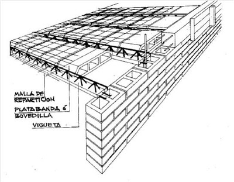
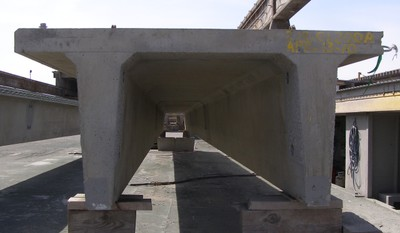

Precast concrete floor with reinforced concrete topping [FC3]
Precast concrete units with reinforced concrete topping. Precast units include hollow-core slabs, solid slabs, a system of precast concrete joists with timber or hollow masonry infill, and double-tee units.

Concrete floor system (Macedonian joists) found in Albania. Polystyrene or similar insulation blocks between concrete joists. A concrete form was constructed, above which concrete joists are laid between supporting concrete beams. In between the thus suspended joists, the blocks of insulation are placed on the formwork, spaced so as to create a void containing each joist. A topping slab is poured, which fills the voids, enclosing the joist in concrete. (C. Scawthorn)

Macedonian joists ready for the floor construction, Albania (C. Scawthorn)

Floor system consisting of concrete masonry units and reinforced concrete joists cast in-situ, Algeria (S. Brzev)

Floor system consisting of concrete masonry units and cast-in-situ reinforced concrete joists (known as "Tralix" system), Chile (S. Brzev)

"Tralix" system construction, Chile (M. Astroza)

Floor system consisting of concrete masonry units and cast-in-situ reinforced concrete joists, Haiti (A. Lang)


Precast concrete floor systems (double-tee units) are typically fabricated with a 50 mm flange and topped in the field with cast-in-place concrete (Canada, S. Brzev)

A typical double-tee element (left) and the end support (right) (S. Brzev)

Double-tee beam lifted by crane at the construction site, Nepal (K. Porter)

Wall corbels ready to support double-tees, Nepal (K. Porter)